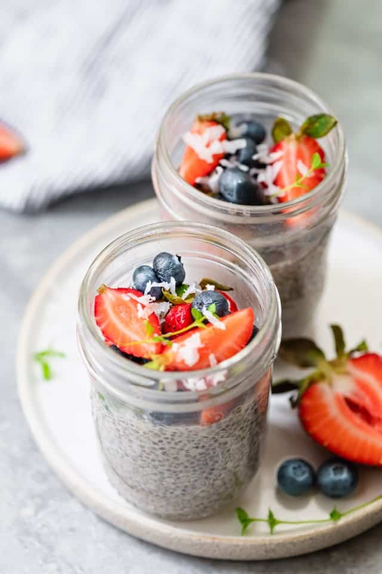

3 Ingredient Chia Pudding

Ingredients
- 2 tablespoon chia seeds
- 1/2 cup almond milk or milk of choice
- Strawberries or other fruits for topping
- 1 teaspoon honey or other sweetener, optional
Directions
-
Pour ingredients into a jar and mix well. Let settle for 2-3 minutes
then mix again very well until you see no clumping.
-
Cover the jar and store in fridge overnight or for at least 2 hours.
-
When you're ready to eat it, top with your favorite fruit and enjoy
cold!